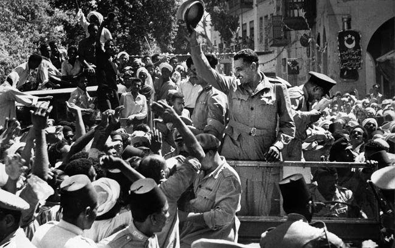
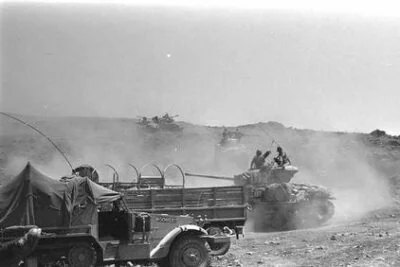
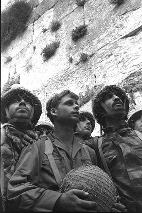
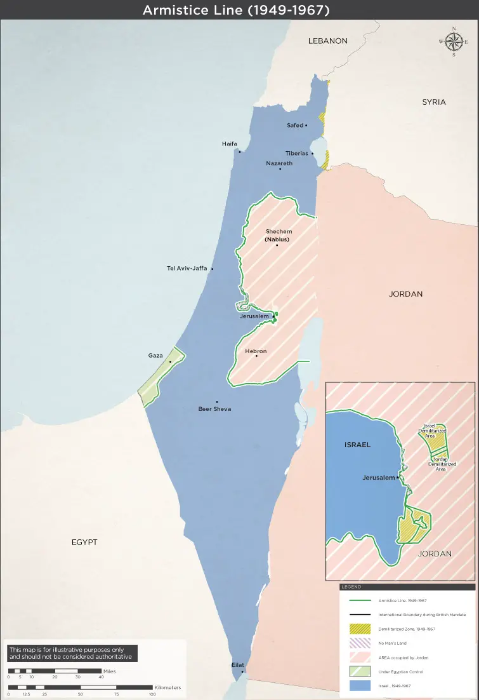
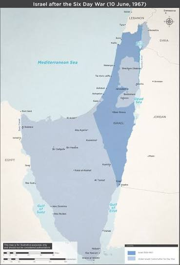
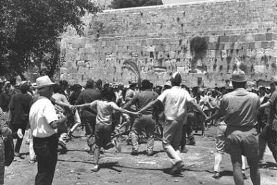
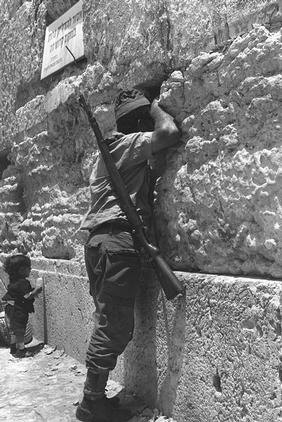
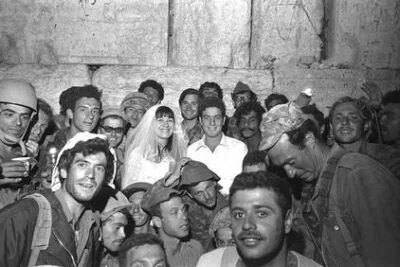

A new map
Israel took control of Sinai, Gaza, the West Bank, East Jerusalem and the Golan Heights.
Step into the war room.
Your choices shape the story.
14 decisions. Two choices each time. Follow the pressure, read the evidence and see what happened next.
14 decisions • 2 spare lives • Built from real events

EGYPT · 1967
GOLAN HEIGHTS · 1967
JERUSALEM · 7 JUNEThree mistakes. Mission over. Ready for another try?
Look at the evidence, rethink your choices and go again.
THE SIX DAY WAR · JUNE 1967
You made the decisions and watched history unfold. Now see how the map changed, and what questions the war left behind.
Compare Israel's boundaries before June 1967 with the areas under Israeli control after the fighting ended.


These historical maps show territorial control at the time, not the present boundaries. Original maps supplied for the game.
Archival photographs of the moment and celebrations that followed.



Israel took control of Sinai, Gaza, the West Bank, East Jerusalem and the Golan Heights.
Could territory be exchanged for peace? Resolution 242 helped shape the diplomacy that followed.
The war displaced many Palestinians and Syrians and raised lasting questions about security, rights and political control.
If you were making these decisions, what would you have done differently?